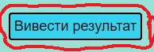

| Публікації | |
| Відео | |
| Години | |
| Повторні відвідини | |
| Біблійні вивчення |
| Публікації | |
| Відео | |
| Години | |
| Повторні відвідини | |
| Біблійні вивчення | |
| Кількість вісників |
Перед початком роботи натисни кнопку "Вивести результат"
Якщо у таблиці результатів у всіх полях з'явилися нулі, це означає, що пам'ять пуста і можна починати додавати звіти. Якщо у деяких або у всіх полях з'явились не нулі, то потрібно натиснути кнопку "Очистити результат" і ще раз на кнопку "Вивести результат".